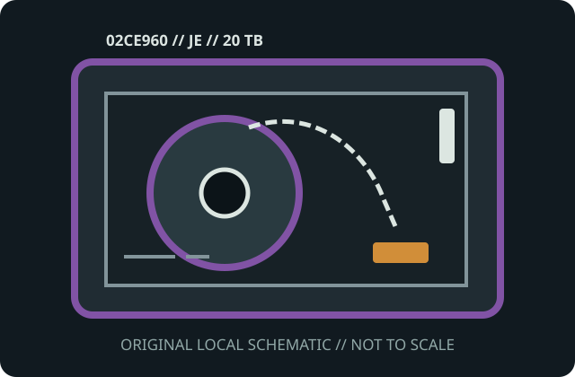

[ MODEL-SPECIFIC MEDIA // PRODUCT RECORD ]
IBM 3592 JE Advanced Type E Data Cartridge (02CE960)
This entry identifies the removable medium SKU, not its drive or dock. Confirm the exact model label, medium generation, host format and drive/dock compatibility before use.

IDENTIFICATION: IBM manufacturer SKU 02CE960; IBM 3592 Advanced Type E (JE) enterprise tape cartridge. Native capacity is distinguished from any data-dependent compression estimate.
Capacity, physical format and compatibility
| Manufacturer / SKU | IBM 02CE960 |
|---|---|
| Medium / generation | IBM 3592 Advanced Type E (JE) enterprise tape cartridge; Type E / 3592 JE media generation; half-inch-class magnetic tape with embedded 3592 cartridge memory. |
| Native capacity | 20 TB native on supported TS1160 generation; compressed estimates (up to 60 TB at 3:1) are not guarantees. |
| Drive/dock compatibility | IBM TS1160 systems qualified for JE media; confirm firmware and library support. It is not interchangeable with JA/JB or LTO media. |
| Physical medium | Sealed 3592 single-reel cartridge with leader, write-protect control and cartridge-memory chip; 12.7 mm-class magnetic tape. |
| Electrical interface | Passive medium apart from its drive-read cartridge memory; no host bus/power connector. The TS1160/library supplies the recording mechanism and host connection. |
| Format limits | 20 TB is the supported native figure for the named drive generation; compressed capacity depends on data. JE generation and TS1160-compatible recording format bound support. |
Storage and preservation cautions
Keep protected in its case, dry and clean, away from strong magnetic fields, dust, heat and sunlight. Acclimatize before use, do not touch tape or leader, maintain checksummed replica copies, and plan migration before drive support disappears.
- Do not force media into a drive/dock or use improvised cleaners, lubricants or repairs. Stop if the shell, connector, tape leader or disk enclosure is damaged.
- Preserve more than one independent copy, verify checksums after transfer, and document the drive/dock, firmware, OS and format used. Plan migration before compatible equipment is lost.
Manufacturer and archival sources
- IBM — 3592 cartridge types and part numbersIBM’s manufacturer table identifies each 3592 media type and its part number.
- IBM — Ordering 3592 tape mediaManufacturer guide for IBM 3592 cartridge-generation and drive-specific capacity information.
- IBM — TS7700 media compatibilityManufacturer drive/media support details; verify the exact TS model and firmware.
- IBM — Supported 3592 cartridge capacitiesIBM lists native capacity and compression ceiling by drive format and media generation.
- Library of Congress — Care, Handling, and Storage of Audiovisual MaterialsArchival guidance for magnetic media preservation.
Capacity labels, compressed ratings, and compatibility are model- and host-specific. Product references and exact drive/dock manuals take precedence over shell fit or a generic family name.